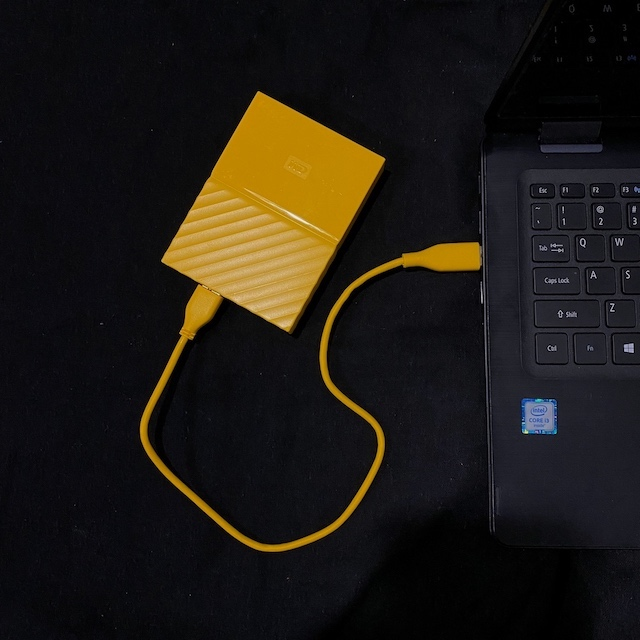

Western Digital (WD) my Passport 2TB Hard Drive (HDD) Review
26/7/2020
Introduction
Nowadays, a lot of laptops don’t have large amount of storage or they’re fixed inside therefore making it impossible to upgrade the storage. However, as a student or person requiring a lot of archived files, storage then becomes an issue. Here we have the Western Digital my Passport! Its a hard drive which is perfect if you want to backup your laptops data or use it with Mac’s Time Machine to retrieve old files on your computer! Let’s check it out!
Design
.jpg)
The design with the sharp yellow really stands out, however there are wide range of colours if yellow isn’t your taste.There are six distinct colours available: Yellow, Red, White, Orange, Blue and a sleek looking Black. As the case design goes, it is split into a smooth and shiny plastic on the top with WD’s logo imprinted onto the front of the all plastic design. The bottom half is a diagonal textured groove that wraps around hard drive, this adds some grip to the smooth textured mentioned above.
Weight and noise
The drive is around 120g which is fairly portable for a hard drive and can be carried around on campus or to work with its relative small size. It also has 4 miniature rubber feet to prevent the HDD from sliding around, a small but handy addition.
This Western Digital drive runs fairly quiet even at high loads being a mechanical drive.
What’s in the box?
We purchased the 2TB version (21.5mm) in a vibrant yellow, and inside the box it includes the same colour USB-A 3.0 to Micro B cable (1 ft). It also came with paper work and 3 year warranty inside the box.
Included Software
Out of the box, WD includes their own software encryption for their drive. Even though we didn’t use it and just reformatted the drive to Ex-FAT, it’s great they include a built-in 256-bit AES hardware encryption with WD Security software helps keep your content private and safe.
Speed
As this drive isn’t a Solid State Drive, we were not expecting large transfer speeds. We averaged 97MB/s for read and 95MB/s for write (using Blackmagicdesign Speed Test) after reformatting the drive to Ex-FAT.
Compatibility
The drive works with Windows with no extra drivers required or reformatting. It is just as simple as a standard USB drive where you can plug in and play. However for Macs, you have to reformat the drive to Ex-FAT if you want to be able to use the drive on multi-platforms.
Even though the drive comes with USB 3.0, it is backward compatible with USB 2.0 but restricted to 2.0 speeds.
Conclusion
We would recommend purchasing this portable drive as a backup device for your files. This 2TB model was just under £45 with student discount through the WD webstore which is worth it for anyone require a high capacity HDD, however if there isn’t any offer, it’s base price is £84.99 which we do not recommend as it is simply too expensive! Don’t expect to be able to edit off the drive as it will be too slow. It can also be used as a Time Machine on Mac to keep old files without loosing them.